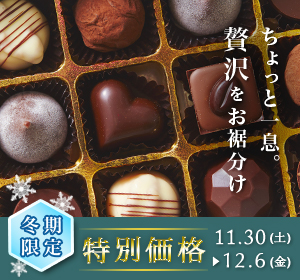
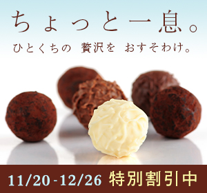
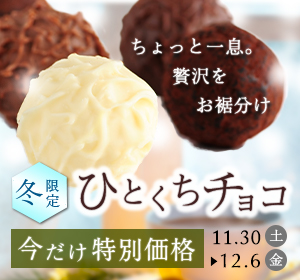
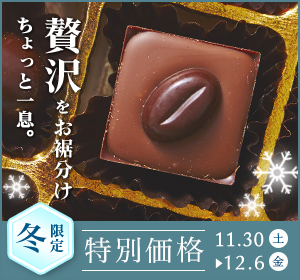
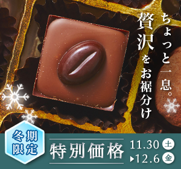
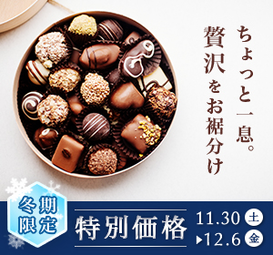
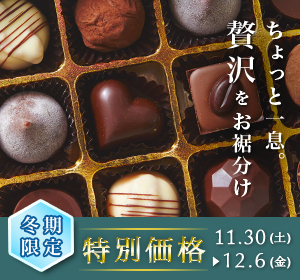
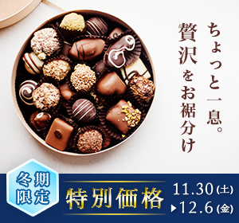

自主制作
高級チョコレート


- カテゴリー
- バナー
- 目的
- 高級チョコレートを冬期限定で割引する架空のキャンペーンをPRする。
- 指定内容
- キャッチコピー「ちょっと一息。贅沢をお裾分け」、期間(11/○〜12/○)、イメージカラー（白、水色）
- ターゲット
- 20から40代の働く男女
- コンセプト
- 冬限定一口チョコ。普段は高価だが今だけ割引価格。
- サイズ
- 300×280（単位：px）
- 担当範囲
- デザイン
- 使用ツール
- Photoshop
- 制作時間
- 13時間（ブラッシュアップ含む）詳細は下記の制作工程を参照
- 制作のポイント
- 視線誘導は右のキャッチコピー→画像→下の特別価格の順です。文字情報の中で「特別価格」を重要と位置づけ、特に目立つように金色であしらいました。キャッチコピーが「お裾分け」なのでチョコレートが複数写っている画像を選択し、細字の明朝体を用いて高級感を出しました。
制作工程

初回制作。必要な情報を殆ど加工せず並べたのみ。
制作時間：3時間

2回目の制作。現役Webデザイナーの制作例と制作工程を参考に構成、情報の優先度、季節感の表現を再検討。
制作時間：3時間

3回目の制作。高級感が感じられなかったのでチョコの画像を変更。「一口チョコ」が商材であるためチョコをアップに。視線誘導をコピー→チョコ→下部へ。高級感をアピールする商用のバナーを参考に、色数を少なく、装飾はさり気ない程度にした。この時点で添削サービスへフィードバックを依頼。
制作時間：4時間

添削サービスからのフィードバックを反映。
・縦の文字だと右から左に読むため右側配置推奨。
・「特別価格」をより目立たせた方が良い。
・白や水色ベースの実例を教えて頂く。
修正時間：1時間

教えて頂いた実例を元に別パターンを制作。
2点合わせて再度フィードバックを依頼。
制作時間：1時間

添削サービスからのフィードバックを反映。
・結晶の白い影が少し強く感じる。
・「特別価格」がまだ弱い。金色も試して欲しい。
・氷の結晶が文字の後ろに多すぎる。
・月日より曜日が目立っている。
結晶を非表示にして他のフィードバックはそのまま反映。「お裾分け」に合わせ、複数のチョコが見えるように画像を縮小。
修正時間：1時間

別パターンも合わせて修正。
2点合わせて再度フィードバックを依頼。
修正時間：15分
添削サービスからのフィードバックを反映。
・フォントのサイズとウェイトの調整。
・雪の結晶はさり気ない程度であるとよい。
・キャッチコピーの「を」前後が空きすぎている。
修正時間：30分
別パターンも合わせて修正。
修正時間：15分